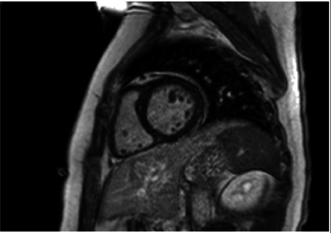

Ficha del catálogo
Miocarditis aguda
- Sistema
- Cardiovascular
- Modalidad
- RM
- Región
- Tórax
- Dificultad
- Avanzado
Es la inflamación del músculo cardiaco, con mayor frecuencia de causa viral, aunque también puede deberse a fármacos, tóxicos y enfermedades sistémicas. Se presenta con dolor torácico, elevación de marcadores de daño miocárdico y alteraciones electrocardiográficas que simulan un infarto, pero con arterias coronarias sin lesiones obstructivas. La resonancia cardiaca es la herramienta no invasiva más útil para confirmarla.
Técnica
El estudio combina secuencias sensibles al edema, imágenes de realce precoz que reflejan hiperemia y realce tardío que muestra el daño irreversible. Cuando se dispone de mapas de T1 y T2 y del cálculo del volumen extracelular, la sensibilidad aumenta y la valoración se hace menos dependiente de la comparación con el músculo esquelético. Todo se adquiere con sincronización electrocardiográfica y en apnea.
Qué observar
- Áreas de señal alta en secuencias potenciadas en T2, indicativas de edema
- Realce tardío de distribución subepicárdica o mesocárdica
- Localización preferente en la pared inferolateral y en el septo
- Ausencia de correspondencia con un territorio coronario
- Derrame pericárdico y engrosamiento pericárdico acompañantes
- Función ventricular global y segmentaria y volúmenes de cavidades
Hallazgos
Se identifican focos de edema miocárdico junto con realce tardío que respeta el subendocardio y se dispone en la mitad externa de la pared. La localización más característica es la pared inferolateral, aunque también puede afectar el septo. Con frecuencia se acompaña de derrame pericárdico ligero y de alteraciones segmentarias de la contractilidad. En casos graves aparece disfunción ventricular global.
Perlas
El dato que más ayuda a separar la miocarditis del infarto es que el realce nunca comienza en el subendocardio y no respeta territorios coronarios, de modo que un realce subepicárdico inferolateral en un paciente joven con dolor torácico y coronarias normales apunta con fuerza a inflamación miocárdica.
Diagnóstico diferencial
- Infarto de miocardio
- El realce se inicia en el subendocardio, es transmural en los casos graves y respeta un territorio coronario.
- Miocardiopatía por estrés
- Presenta discinesia apical extensa con edema pero sin realce tardío significativo, y revierte en semanas.
- Sarcoidosis cardiaca
- Muestra realce parcheado multifocal, con frecuencia septal basal, y afectación de otros órganos.
- Pericarditis aislada
- El realce se limita a las hojas pericárdicas engrosadas sin afectar el espesor del miocardio.
Simuladores
- Artefacto de señal alta en la pared lateral por la bobina de superficie
- Realce en la unión del ventrículo derecho con el septo, presente en otras cardiopatías
- Movimiento respiratorio que produce bandas brillantes en las secuencias de edema
Por modalidad
- RM
- Detecta edema, hiperemia y daño irreversible y permite localizar el patrón no isquémico del realce.
- US
- El ecocardiograma valora la función y el derrame pericárdico y descarta otras causas de disfunción aguda.
Protocolo
Cine en ejes largos y corto, secuencias potenciadas en T2 con supresión de la grasa para el edema, realce precoz y realce tardío tras gadolinio. Se recomienda incluir mapas de T1 y T2 y calcular el volumen extracelular cuando el equipo lo permita. El control evolutivo a los pocos meses documenta la resolución del edema y la fibrosis residual.
Clasificación
Se emplean criterios de consenso que combinan la presencia de edema en secuencias sensibles al agua con evidencia de daño en el realce tardío o en los mapas paramétricos. La afectación se describe además por su distribución segmentaria y por la repercusión funcional, desde formas focales con función preservada hasta cuadros fulminantes con disfunción grave.
Errores frecuentes
- Comparar la señal miocárdica con un músculo esquelético también afectado
- Interpretar el realce en los puntos de inserción del ventrículo derecho como miocarditis
- Realizar el estudio con demasiado retraso, cuando el edema ya se ha resuelto

miocarditis edema miocárdico realce subepicárdico resonancia cardiaca dolor torácico coronarias normales inflamación